Choper mi bebé, si supieras cuanto se te extraña. Cualquiera diría que cuando alguien fallece con el tiempo uno olvida pero no fue el caso, dejaste un hueco en el corazón que nunca se podrá cerrar. No hay día que pase que no piense en ti, después de tu partida he tratado de repartir el mismo amor que tu gozabas a otros perritos, todos merecen amor y muchos de ellos sufren a diario.
Me hubiera encantado que conocieras a la Albita, se parece tanto a ti, quizas te hubieras puesto celoso.
Aunque esta idea duele, tu partida hizo que una bebé pueda vivir su vida como un una bebé, poder jugar, dormir, recibir amor, cariño. Aquello que tu gozabas ahora esta cosita también lo hace. Nunca pensé que te perdería tan pronto, nunca pasó por mi mente que te fueras tan pronto.
El día que te dijimos adiós fue tan surreal, toda la mañana y tarde pasó normal, no me dió ganas de llorar, sin embargo cuando llegó la hora algo se rompió, fue como si hubiera vuelto a la realidad, como si por fin fuera consciente. Fue el peor sentimiento del mundo, senti un vacío tremendo, saber que te ibas, que no te iba a volver a ver, que mañana me despertaría solo. Quizas esos pensamientos específicos no pasaron por mi mente en ese momento pero el vacío que sentí fue tan real que lo único que pude hacer en ese momento fue llorar y abrazarte.
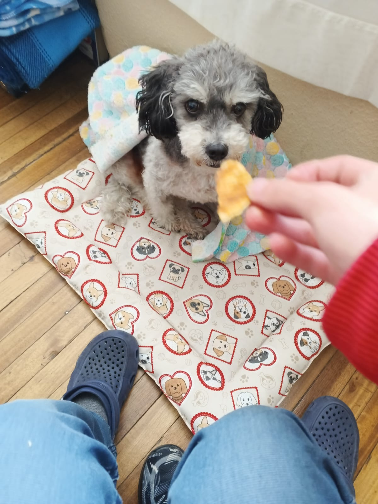Sentí como si en ese momento iba a perderlo todo, en ese entonces eras mi todo. Desde que supe que tu enfermedad no tenía cura me destrozó, desde ese entonces sabía que no acabaría bien, sabía que iba a perderte. No ibas a acompañarme hasta ser más adulto como yo siempre imaginé. El día que te fuiste compre papas para que comas, quise comprarte chocolate para que puedas irte probando aquello que los perros no pueden comer, sin embargo no lo hice, hasta día de hoy me arrepiento. Nunca vas a salir de mi cabeza mi bebé, realmente es como si hubiera perdido a un hijo y aunque a veces parezca que ya no pienso en el tema, siempre estás en mi cabeza.
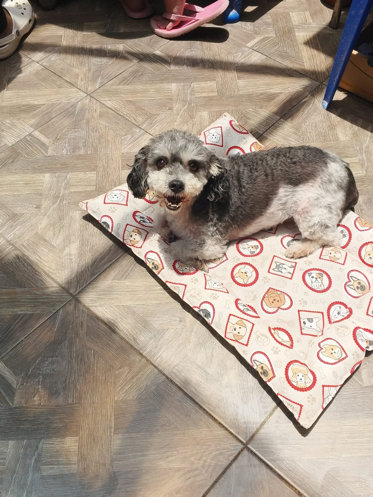Verte tan feliz duele como no tienes idea, eras tan juguetón, tan mimado, tan apegado, en esos últimos días lo que sentías era dolor, ya no vivías feliz, solo vivías por mi y dejar que sigas sufriendo y que aquellos buenos recuerdos llenos de alegría y saltos se manchen...
Cuando te pusiste mal era terrible saber que no volverías a poder correr como lo hacías, que no podrías volver a pegar esos brinquitos que tanto hacías, toda esa alegría que tenías se perdía con todo el dolor que tenías, dejarte vivir en dolor y triste solo porque yo no quería dejarte ir hubiera sido la cosa más egoísta que podría haber hecho.
Por eso cuando veo como está tu madre adoptiva, como tiembla, le duele el cuerpo y sufre, me parte el alma. Como te quería la sishi, realmente te consideraba su cachorrito, me duele saber que te fuiste antes que ella, ella te vió crecer y ahora está sola. Hace tiempo me contarón una anécdota en la que la sishi te tiraba trozos de comida desde arriba para que comas, me llena y rompe el corazón a la vez. Tan bella la sishi y en el estado en el que está ahora, no se merece eso, tan bueno que fue contigo y que ahora viva así. Mi gordito precioso es obvio que tu no querías eso para tu mamita.
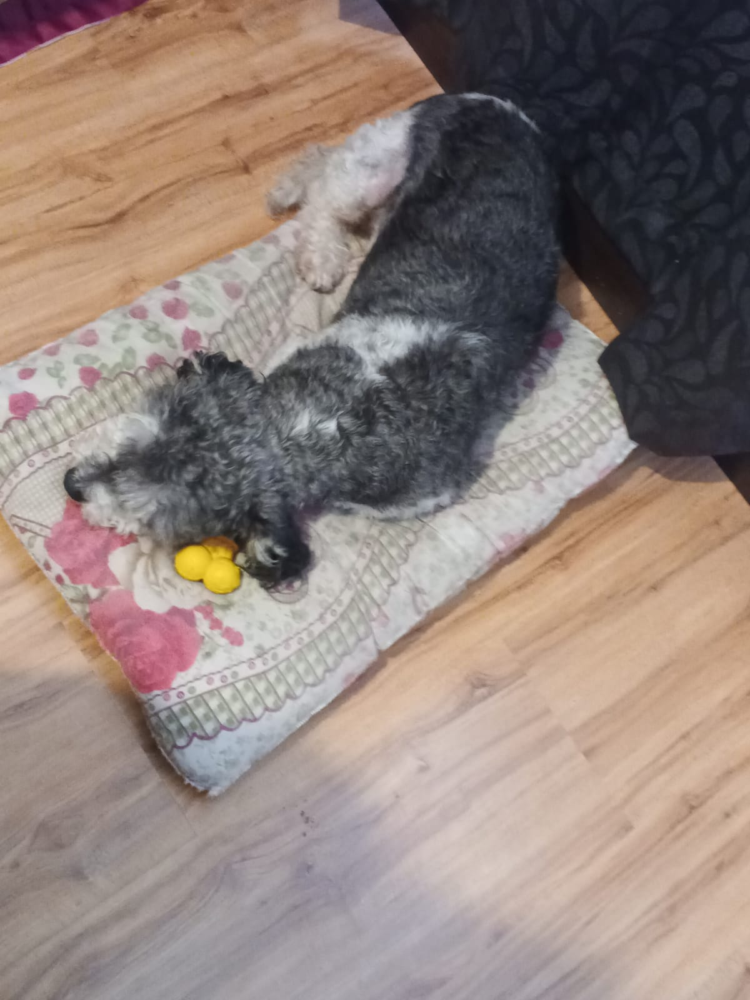 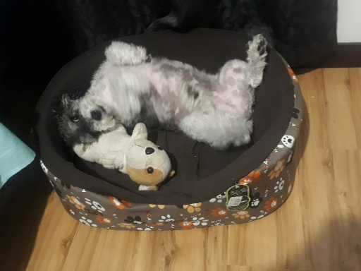 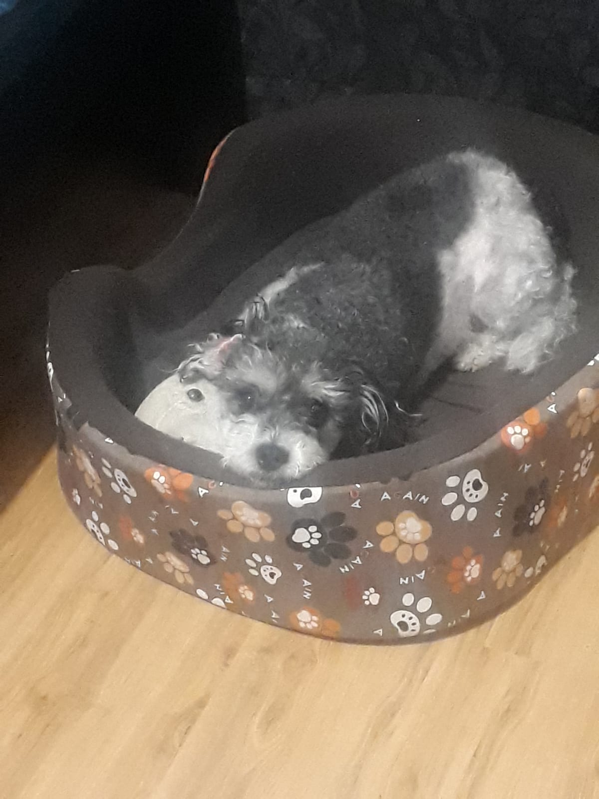Tengo tantas fotos de ti durmiendo, me encantaba tomarte fotos durmiendo, a veces te acomodabas tan chistoso, eres un amor, te encantaba dormir con tus juguetes. Un niño tal cual.
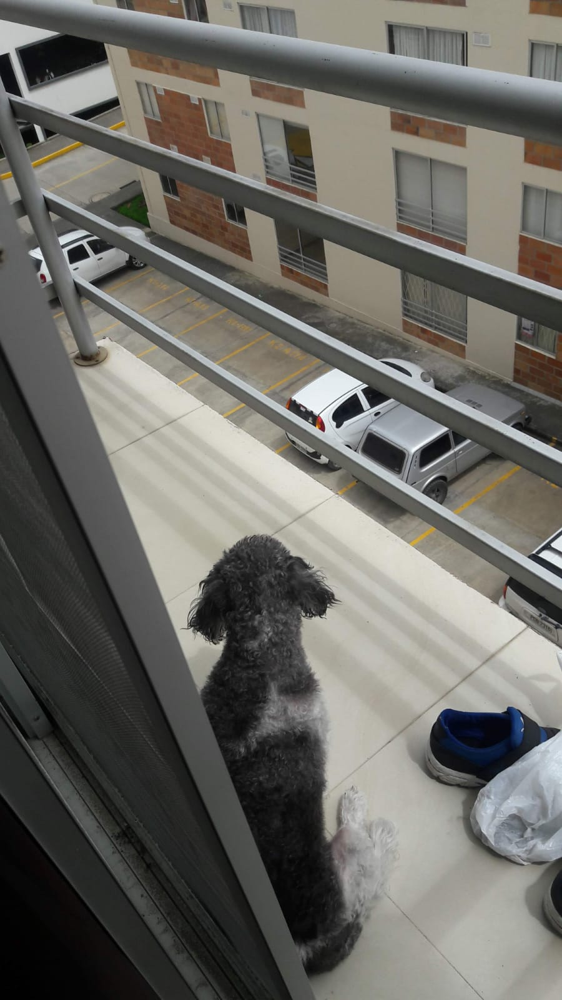 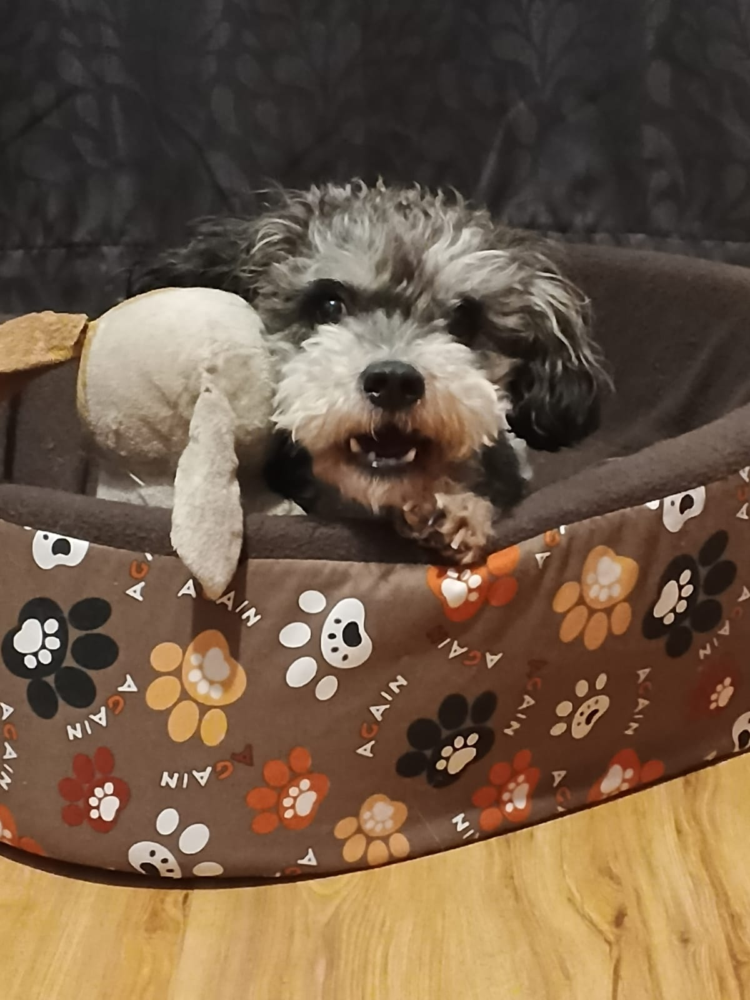Lamento que hayas pasado tan mal de pequeño, estando solo y triste solo porque yo era un cómodo que se quería evitar los malos ratos por si te orinabas. Lamento haber sido tan malo cuando apenas eras un bebé, no sabes cuantos años estó me ha seguido y saber que nunca podré deshacer lo que hice. Lo menos que pude hacer es remediar esto con la Albita, estoy haciendo lo que tuve que hacer desde un inicio, estoy dandole ese cariño y amor que debí haberte dado como bombas cuando fuiste un cachorrito.Tu partida hizo que esta perrita pueda vivir, pueda vivir bien, vivir feliz, vivir bajo un techo lleno de amor, vivir rodeada de personas que la aman.
~Tu salvaste a esta cachorrita.~
~Nosotros los humanos tenemos amigos, familiares,etc. Pero ustedes solo nos tienen a nosotros, somos su mundo.~
Alba mi bebé, te amo con todo mi corazón. Te amo de aquí hasta el borde del universo, a pesar de que sea descuidado en ocasiones, no sabes cuanto te amo, no sabes lo que haría por ti.
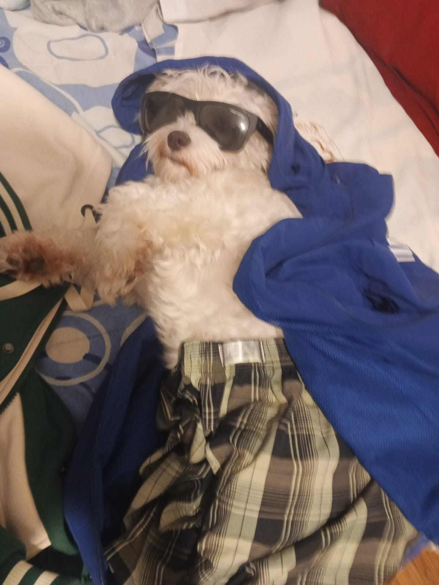Aprendí que no puedo dar por sentado que estarás conmigo por el tiempo que yo quiera, voy a cuidarte y sobretodo darte todo el amor que mereces mi princesa. El día que no estés no sabes como nos va a hacer falta el sonido de tus patitas, tu mirada, tus juguetes tirados por el suelo, tus ladridos, tus paradas en dos patas, tu pelaje tan suave.
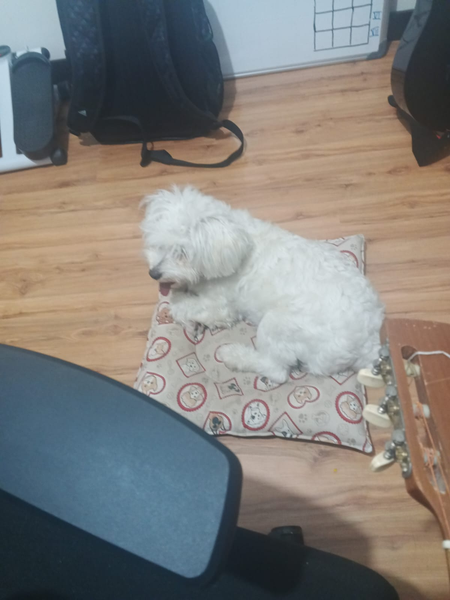A veces pienso en como será cuando ya no estés más, duele saber que algún ya no estarás más aquí mi bebé, eres tan alegré, tan juguetona, no quiero llegar a verte mal como a mi gordo. No quiero que tu felicidad se pierda.
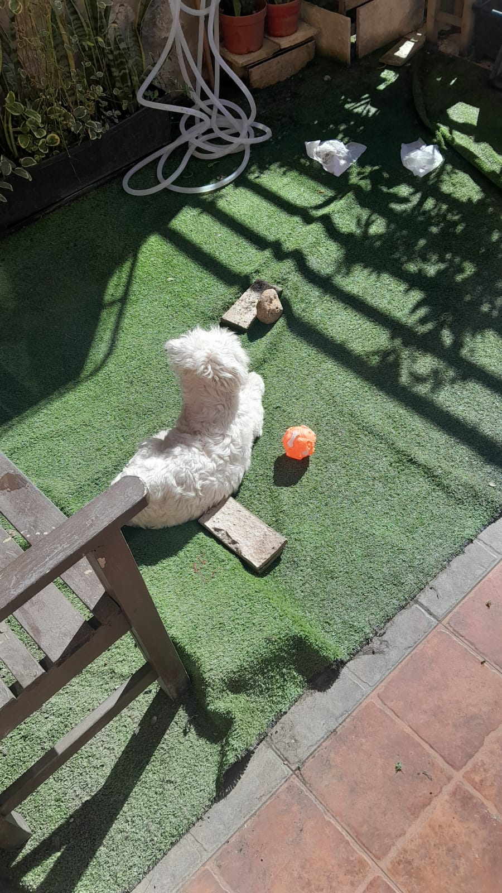 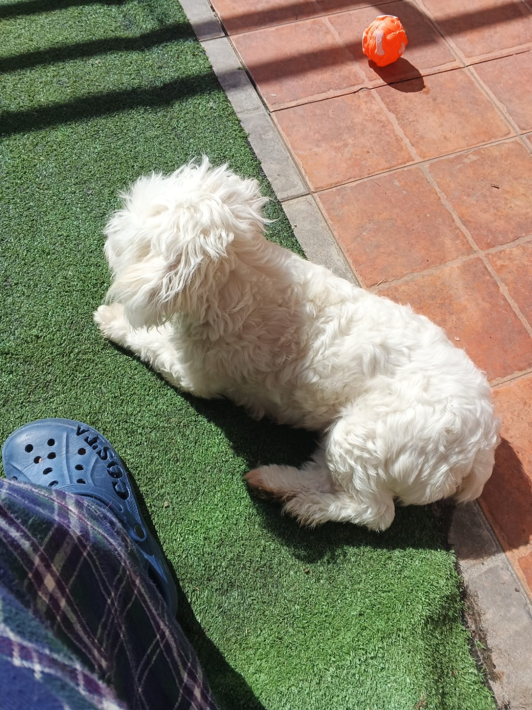 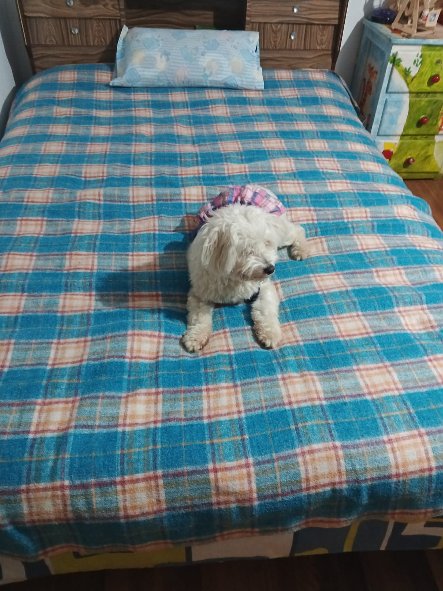 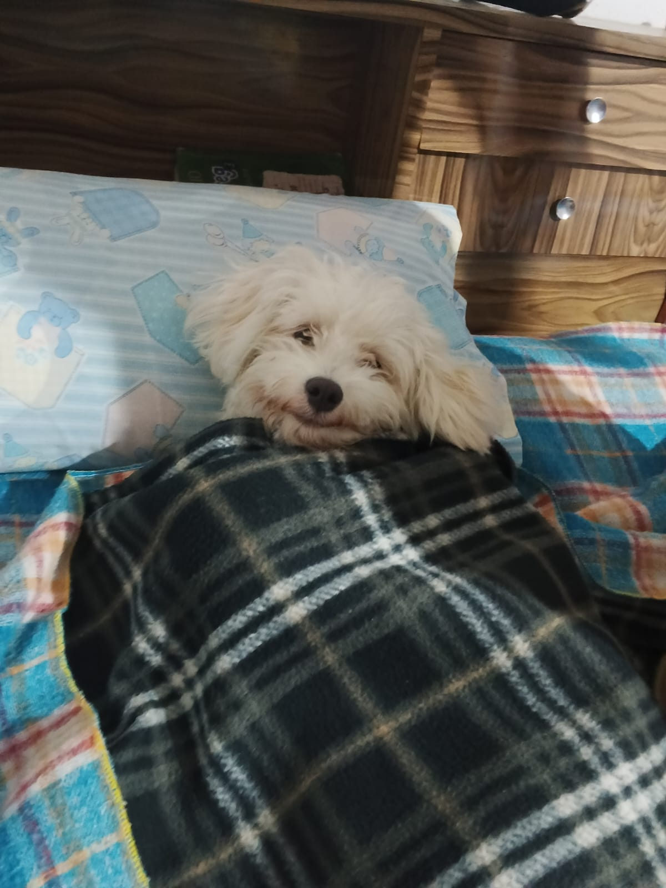~Te amo con todo mi corazón~